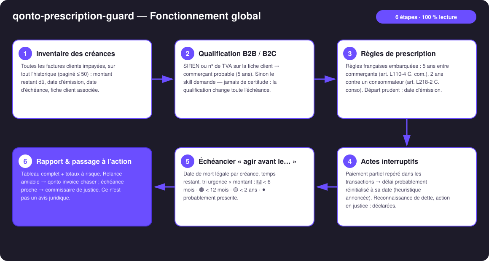
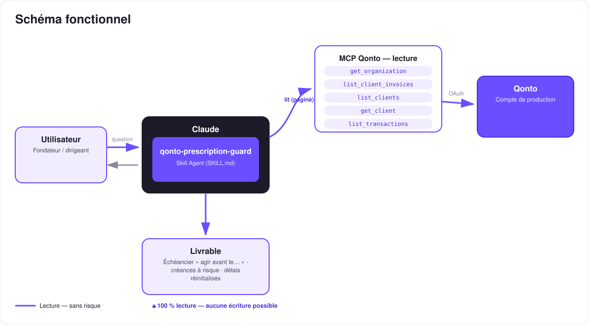

Chaque facture impayée a une date de mort légale — le skill la trouve, et te dit avant quand agir.
Une facture impayée ne meurt pas quand on l'oublie — elle meurt quand la prescription tombe : 5 ans entre commerçants (art. L110-4 C. com.), 2 ans contre un consommateur (art. L218-2 C. conso). Et le piège inverse existe : un paiement partiel réinitialise le compteur — des créances qu'on croyait mortes sont peut-être encore vivantes.
Toutes les factures clients impayées, sur tout l'historique — les vieilles factures sont précisément le sujet.
SIREN / n° de TVA sur la fiche client → commerçant probable (5 ans) ; sinon le skill demande — jamais de certitude affichée.
Paiement partiel repéré dans les transactions → « délai probablement réinitialisé le [date] — à confirmer avec un juriste ».
Date limite par créance, temps restant, tri urgence × montant : 🔴 < 6 mois · 🟠 < 12 mois · 🟡 < 2 ans · ⚫ probablement prescrite.
| Prérequis | Détail | Obligatoire |
|---|---|---|
| Compte Qonto production | Le skill s'adapte à toute organisation — get_organization d'abord, zéro donnée en dur | ✅ |
| Pays | Règles de prescription : France uniquement. Autres pays Qonto (DE, ES, IT…) : rapport d'ancienneté des créances, sans qualification légale, jamais de règle inventée | ℹ️ détecté |
| MCP Qonto connecté | Connecteur officiel (claude.ai / Claude Desktop), login OAuth | ✅ |
| Facturation clients dans Qonto | Le skill lit list_client_invoices — les factures émises hors Qonto ne sont pas vues | ✅ |
| Fiches clients renseignées | SIREN / n° de TVA → qualification B2B automatique ; sinon le skill pose la question | ⭕ recommandé |


100 % lecture — il n'y a rien à approuver : le skill ne crée rien, ne modifie rien, ne déplace rien. Tout est en trait plein (lecture sans risque). Le risque n'est pas dans l'outil, il est dans le calendrier : c'est le temps qui agit, pas le skill. Et le rapport n'est pas un avis juridique — un juriste valide avant d'agir ou de renoncer.
| Situation | Délai | Base légale |
|---|---|---|
| Créance entre commerçants (ou née de l'activité commerciale du débiteur) | 5 ans | art. L110-4 Code de commerce |
| Professionnel contre consommateur (particulier, usage non professionnel) | 2 ans | art. L218-2 Code de la consommation |
| Point de départ : jour où le créancier a connu les faits — pour une facture, prudemment la date d'émission | — | art. 2224 Code civil |
| Interruption → le délai repart à zéro : reconnaissance de dette (un paiement partiel vaut reconnaissance tacite), demande en justice, exécution forcée | nouveau délai complet (art. 2231) | art. 2240-2244 Code civil |
| ⚠️ N'interrompt PAS : relances, emails, mise en demeure même recommandée | — | jurisprudence constante |
À savoir : la prescription doit être soulevée par le débiteur — le juge ne l'applique pas d'office (art. 2247). En pratique, traite la date comme la mort de la créance, mais le skill ne déclare jamais une créance définitivement morte… ni définitivement vivante.
| Sortie | Format | Quand |
|---|---|---|
| Réponse dans la conversation | Tableaux markdown : échéancier « agir avant le… », totaux à risque à 6/12 mois, réinitialisations détectées | Toujours — c'est la base |
| Timeline interactive | Fichier/artifact HTML : une barre par créance (départ → date de mort), marqueur « aujourd'hui », couleur par urgence, largeur par montant | Si l'hôte affiche les fichiers (artifacts claude.ai, Claude Desktop, Claude Code) ; repli automatique sur les tableaux sinon |
| Liste « probablement prescrites » | Section séparée du rapport, jamais mélangée aux créances vivantes | À chaque scan |
La démo ≤ 3 min jointe à la PR suit le storyboard : le problème (la mort silencieuse des créances) → le scan et l'échéancier → le moment fort : un paiement partiel détecté qui ressuscite une facture qu'on croyait morte → la timeline finale et le pipeline avec qonto-invoice-chaser. Le script détaillé de tournage est conservé en interne (hors dépôt).
| Idée | Effort | Note |
|---|---|---|
| Rappels calendrier « agir avant le… » (MCP calendrier détecté dynamiquement) | Faible | Multi-MCP optionnel — s'active si présent, sinon le skill le dit et continue |
| Modules pays (DE : 3 ans §195 BGB, ES, IT…) | Moyen | Même moteur, tables de délais par pays |
| Suivi des suspensions (médiation, art. 2238 C. civ.) | Moyen | Déclaratif — affine les dates |
| Brouillon de courrier pour le commissaire de justice | Faible | Sortie texte, toujours 0 écriture MCP |